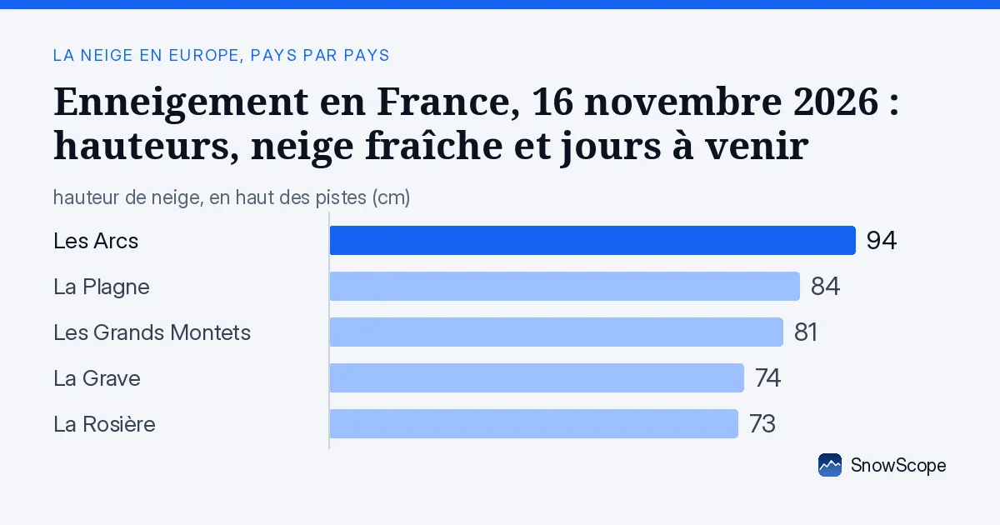

France ou Suisse ? Où la neige est meilleure le 16 novembre
11 % du relief cartographié est blanc en France, contre 53 % en Suisse. La station la plus enneigée en France a 20 cm ; en Suisse, c'est Ovronnaz avec 136 cm.
Consultez les prévisions neige en temps réel pour Les Arcs sur l'application SnowScopeHauteurs de neige, alertes poudreuse et carte 3D, gratuitement.
De l'autre côté de la frontière
Pour un séjour près de la frontière, cela décide de la direction : la neige n'est pas où l'on croit, elle est là où la dernière perturbation est passée.
9 450 km² de terrain enneigé en France ce lundi, 570 km² perdus depuis hier. Cela représente 11 % du relief cartographié en France.
| Pays | Blanc | Station la plus enneigée | 7 prochains jours |
|---|---|---|---|
| France | 11 % | Les Arcs | 105 cm |
| Suisse | 53 % | Ovronnaz | 112 cm |
| Italie | 23 % | Monterosa Ski | 75 cm |

Les voisins aujourd'hui
Pour comparer, les voisins le même jour : Suisse : 53 % de blanc, Ovronnaz en tête avec 136 cm, jusqu'à 112 cm dans la semaine; Italie : 23 % de blanc, Monterosa Ski en tête avec 99 cm, jusqu'à 75 cm dans la semaine.

Les meilleures stations du moment
Les Arcs est en tête avec 94 cm sur le haut du domaine.
Ensuite : La Plagne (84 cm), Les Grands Montets (81 cm), La Grave (74 cm) et La Rosière (73 cm).
Les Arcs a reçu 29 cm en trois jours et pourrait gagner 87 cm d'ici jeudi 19 novembre.
À La Plagne : 26 cm de neige fraîche en trois jours, 79 cm de plus attendus d'ici jeudi 19 novembre.
103 des 224 stations suivies en France ont de la neige sur le haut du domaine.
Le reste de la sélection : Les Grands Montets : 81 cm en haut, 29 cm en trois jours, 89 cm attendus; La Grave : 74 cm en haut, 41 cm en trois jours, 90 cm attendus; La Rosière : 73 cm en haut, 25 cm en trois jours, 86 cm attendus.
Les prochains jours
Comptez jusqu'à 65 cm sur les pentes les plus arrosées d'ici le troisième jour ; le cumul sur sept jours atteint 105 cm.
Le jour le plus neigeux devrait être le vendredi 20 novembre, avec jusqu'à 33 cm aux endroits les plus arrosés.
Plus loin, les jours 8 à 14 montrent jusqu'à 44 cm sur les pentes les plus enneigées.
Hauteur de neige selon l'altitude
Épaisseur moyenne du manteau par tranche d'altitude : 1 000-1 500 m : en moyenne moins de 1 cm (1 % du sol blanc); 1 500-2 000 m : en moyenne 1 cm (33 % du sol blanc); 2 000-2 500 m : en moyenne 6 cm (72 % du sol blanc); au-dessus de 2 500 m : en moyenne 25 cm (94 % blanc).
La couverture neigeuse du jour
Pour un paysage blanc, visez 1 900 m et plus haut. Les 8 000 km² de la semaine dernière ont augmenté de 1 450 km².
Neige fraîche sur trois jours
Le massif du Mont-Blanc, les Alpes du Sud et les Alpes du Nord ont reçu le plus de neige fraîche en trois jours, jusqu'à 29 cm.
En une journée, jusqu'à 12 cm se sont ajoutés.
Environ 8 980 km² ont reçu au moins 5 cm.
Comment ce début se situe
Station par station, aujourd'hui face à un 16 novembre normal : Les Arcs : 20 cm vers 2 214 m, contre 27 cm une année normale; La Plagne : 16 cm vers 2 138 m, contre 32 cm une année normale; Les Grands Montets : 22 cm vers 2 001 m, contre 21 cm une année normale; La Grave : 53 cm vers 3 370 m, contre 72 cm une année normale.
1 de ces 4 stations sont au-dessus de leur hauteur habituelle à cette date.
Ces hauteurs valent pour une altitude donnée de chaque montagne, sous le sommet : elles sont donc plus basses que les chiffres du haut des pistes plus loin.
Les hivers passés, la meilleure neige à Les Arcs arrivait d'habitude début mars / mi-mars.
Préparer une journée sur la neige
Au-dessus de 2 500 m, le sol est presque entièrement blanc (94 % couvert) : les pistes y ont une sous-couche continue.
Entre 1 500 m et 2 500 m, la couverture est irrégulière, environ 33 % de blanc : herbe et cailloux entre les plaques.
Sous 1 500 m, les pentes sont encore presque nues.
Si vous pouvez choisir le jour, partez après le vendredi 20 novembre : la neige fraîche aura le temps de se tasser et les routes d'être dégagées.
Ce que cela donne sur les pistes
La neige fraîche rafraîchit le haut des pistes ; plus bas, elle peut déjà être lourde ou mouillée.
Avec de la neige annoncée, les prochains jours devraient encore améliorer la situation.
Conseils aux skieurs
- Lisez le bulletin d'avalanche local avant le hors-piste.
- Neige fraîche sur base froide : prudence dans les pentes raides.
- La neige de début de saison est fine sur les cailloux : privilégiez les pistes damées.
À propos de ces chiffres
Les hauteurs de neige des stations sont la neige la plus épaisse sur le haut du domaine à la date indiquée ; ce sont des estimations pour une zone, pas une mesure en un point. Les prévisions peuvent changer. Consultez toujours le bulletin d'avalanche officiel avant le hors-piste.
Citer ce bulletin
Pour la recherche, l'enseignement ou la presse : chiffres et graphiques réutilisables librement sous CC BY 4.0 avec cette citation.
SnowScope (2026), France ou Suisse ? Où la neige est meilleure le 16 novembre, https://snowscope.app/blog/fr/2026/11/france-snow-report-16-november-2026.html, consulté le 2026-11-16
SnowScope (Atlas Labs). (2026, November 16). France ou Suisse ? Où la neige est meilleure le 16 novembre. SnowScope snow reports. https://snowscope.app/blog/fr/2026/11/france-snow-report-16-november-2026.html
BibTeX
@misc{snowscope2026francesnowreport16novemb,
author = {{SnowScope (Atlas Labs)}},
title = {France ou Suisse ? Où la neige est meilleure le 16 novembre},
year = {2026},
month = nov,
howpublished = {\url{https://snowscope.app/blog/fr/2026/11/france-snow-report-16-november-2026.html}},
note = {Published 2026-11-16 20:42 UTC; accessed 2026-11-16}
}· CC BY 4.0 · Méthodes, données et outils →
Les Arcs : neige et température selon l'altitude, cet hiver vs l'hiver dernier (outils) →
Suivre Les Arcs
Gratuit : un message quand la neige arrive, et la météo chaque matin.
Autres bulletins neige

Niveau 0 °C dans les Alpes les prochains jours : 1 330–3 210 m. La limite de neige atteint son maximum à 2 900 m le 22 novembre. Risque de pluie sur neige aux stations d'altitude moyenne dimanche 22 novembre.

130 stations françaises ont du manteau neigeux le 20 novembre. Le massif du Mont-Blanc a reçu 297 cm en trois jours, avec d'autres chutes attendues.